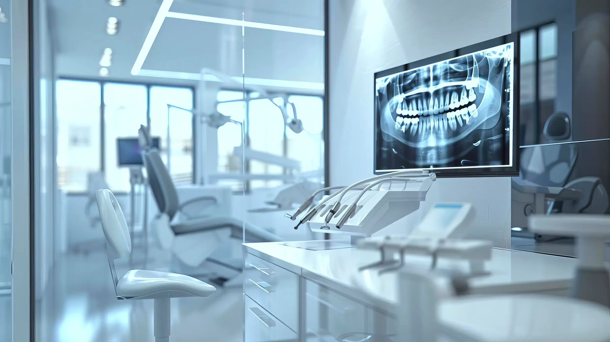

0599998531
استمتع بمستوى من التحكم لم يكن ممكناً من قبل.
هنا يمكنك إضافة شرح مفصل حول تقنيات المسح الضوئي المستخدمة في لازورد.
تفاصيل حول كيفية إرسال الطلبات والمواصفات رقمياً لضمان السرعة.
شرح لعملية مراجعة التصميم ثلاثي الأبعاد واعتماده من قبل الطبيب.
نظام تتبع ذكي يتيح لك معرفة مرحلة تصنيع الحالة لحظة بلحظة.
التزامنا بتقليص مدة الانتظار لتوفير أفضل تجربة للمريض.
مقارنة توضح تفوق خدماتنا الرقمية من حيث الدقة والسرعة.
